Problem 3.1, polynomial rootfinding. Given a positive b and real or complex coefficients
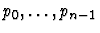
of the monic polynomial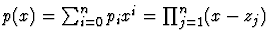
with zeros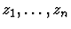
lying in the unit disc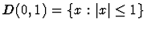
, compute approximations to the zero,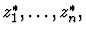
satisfying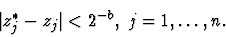
If some zeros of p(x) are not in the unit disc D(0,1) , we may compute the values
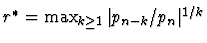
,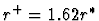
, recall from [He74], pp. 451-457, that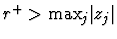
{\rm max}_{j} \vert z_j\vert$">, and scale the variable x , that is, shift from p(x) to the monic polynomial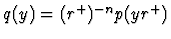
with zeros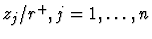
.For a few millennea, the study of this problem was crucial for the development of mathematics and applied mathematics; presently this subject remains highly important for computer algebra (cf. [P97], [P98a]). The solution of this algebraic problem typically combines numerical and algebraic techniques, in some cases also involving geometric search on the complex plane. In particular, this is the case for the recent algorithms of [P95] (cf. also [P96], [P97], [P98a]), which support the following results.
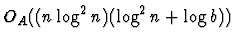
as well as by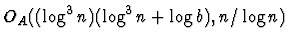
and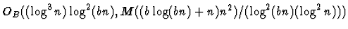
, where M(d) is the Boolean complexity of multiplication of a pair of integers modulo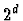
,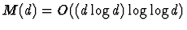
.The estimates of Theorem 3.1 are optimal (up to polylogarithmic factors in n and b) under both arithmetic and Boolean models and in both cases under both sequential and parallel models of computing, because they are within polylogarithmic factors from the number of input coefficients as well as from the number of binary bits required to represent these coefficients in order to enable obtaining the output zeros within the error bound
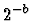
. Indeed, we need to process all the n coefficients in order to obtain even a single zero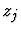
. Moreover, we have to process order of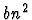
bits of n/2 trailing coefficients of such a polynomial as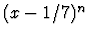
in order to approximate within its single (n -multiple) zero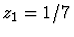
.The algorithms of [P95], [P96] supporting Theorem 3.1 involve sophisticated and advanced algebraic, numerical and geometric techniques, and this slows down the process of their numerical testing and practical implementation. The reader is referred to [P97] on the currents most competitive practical algorithms for polynomial rootfinding.